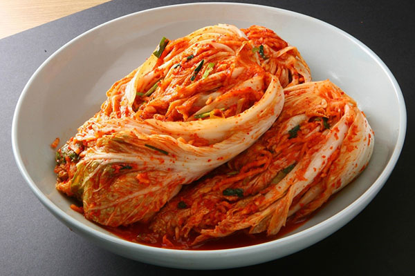
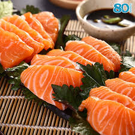
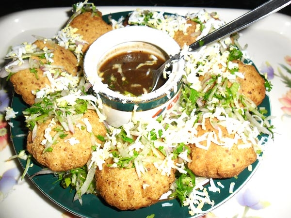
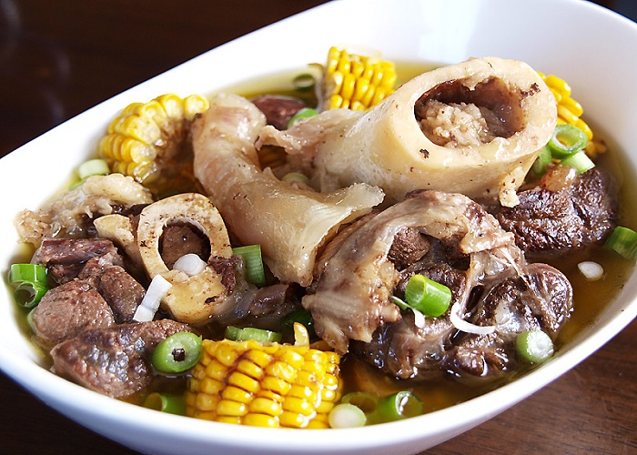
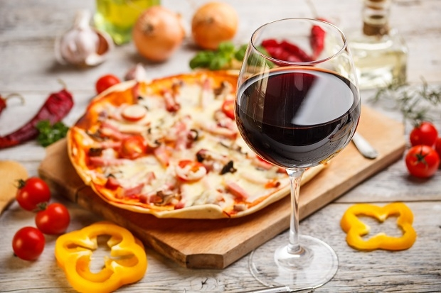
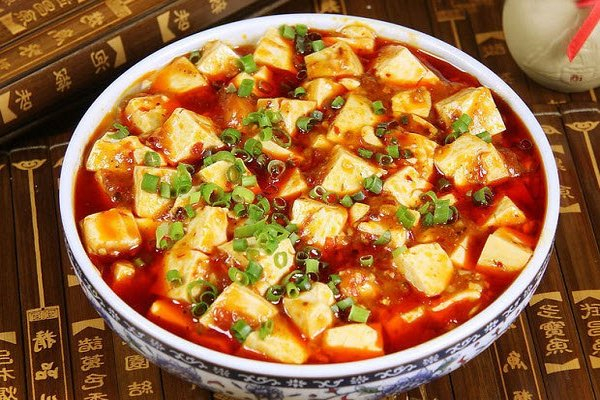

Không có gì ngạc nhiên khi nói về ẩm thực Hàn Quốc - một thế giới đầy màu sắc và hấp dẫn. Các món ăn như kimchi, gimbap, mỳ lạnh, thịt nướng... đã trở nên quen thuộc với giới trẻ Việt Nam. Một trong những món ưa thích là gimbap, hay còn gọi là cơm cuộn rong biển. Gimbap giống sushi của Nhật nhưng to hơn và đa dạng hơn với nhân bao gồm trứng cuộn, cà rốt, xúc xích, hành...
Một món khác không thể không nhắc đến là miến trộn - japchae. Được làm từ miến, rau mùa, và thịt bò, japchae có hương vị độc đáo với gia vị như xì dầu, ớt, và hạt vừng. Hãy khám phá thêm nhiều món ngon khác khi bạn có dịp đến Hàn Quốc!

2. Nhật bản
Ẩm thực Nhật Bản tập trung vào việc làm nổi bật hương vị tươi ngon, tinh khiết tự nhiên của món ăn mà không lạm dụng quá nhiều gia vị. Hương vị thường thanh tao, nhẹ nhàng và phù hợp với thiên nhiên từng mùa. Do vị trí địa lý bốn bề bao quanh đều là biển, hải sản và rong biển chiếm phần lớn trong khẩu phần ăn của người Nhật. Lương thực chính của họ là gạo. Người Nhật cuộn gạo trong những tấm rong biển xanh đen, tạo thành món sushi, được xem là quốc thực của Nhật Bản.
Mặt khác, Sushi là một món ăn được yêu thích trên toàn thế giới. Đó là món cá tươi cắt lát mỏng và được nhúng vào hỗn hợp gia vị với các loại thảo mộc. Nếu bạn có ý định đến thăm
Nhật Bản thì hãy thử nó ở các nhà hàng Sushi dưới ga tàu điện ngầm Tokyo. Nhật Bản không chỉ nổi tiếng với danh lam thắng cảnh và công nghệ tiên tiến mà còn hấp dẫn với ẩm thực ngon và độc đáo, đảm bảo bạn sẽ hài lòng với những trải nghiệm ẩm thực khó quên này./

3. Bangladesh
Có thể bạn sẽ cảm thấy bất ngờ khi nghe đến Bangladesh ở đây. Tuy nhiên, lần đầu tiên thực khách đến đây, vùng đất bí ẩn này đã gây ấn tượng mạnh mẽ. Bangladesh nổi tiếng với những món ăn đường phố ngon nhất, đặc biệt là món sữa chua 'Chai' hấp dẫn. Một món ăn yêu thích khác là 'Fuschka', chiếc bánh chiên phủ ớt xanh và hành tây, ngâm trong nước sốt me cay nóng. Một trải nghiệm ngon miệng và thỏa mãn. Thêm một cốc 'Chai' nữa là tuyệt vời.
Món 'BhapaPittas' cũng là một lựa chọn tuyệt vời. Đây là món bánh ngọt hấp, thơm ngon, kèm đường nâu và dừa. Nó giống như bánh xốp nhưng mềm mại và thơm ngon hơn. Bangladesh có nhiều món ngon cho những tín đồ ẩm thực muốn khám phá.
Hành trình khám phá ẩm thực của Bangladesh sẽ đầy đủ với những món đặc sản thơm ngon, chắc chắn sẽ làm say đắm bất kỳ thực khách sành ăn nào.

4. Philippines
Philippines là một quốc gia châu Á đặc biệt với sự pha trộn của hai nền văn hóa Á và Âu. Philippines từng là thuộc địa của Bồ Đào Nha, nơi họ đã kết hợp văn hóa và ẩm thực Bồ Đào Nha với truyền thống của mình. Với ngôn ngữ đa dạng và món ăn ngon, Philippines là một điểm đến hấp dẫn.
Một trong những món ăn nổi tiếng của Philippines là trứng vịt lộn, thường là bữa sáng phổ biến. Bạn có thể thấy nó là một món ăn độc đáo và dinh dưỡng, mang lại năng lượng cho cả ngày. Bistek Tagalog là một món ăn phổ biến tại miền Tây Philippines, với bít tết ngon và hấp dẫn, thường kèm theo nước ép cam hoặc quýt, hành tây chiên mềm. Du khách thường đánh giá Philippines là quốc gia có bistek ngon nhất khu vực Đông Nam Á.

5.Italy (Ý)
Ẩm thực là một trong những điều đặc trưng của Ý. Du khách có thể tìm thấy những hình ảnh sinh động về văn hóa, truyền thống của từng vùng miền trong từng món ăn của đất nước hình chiếc ủng này. Ẩm thực Ý được chế biến từ những nguyên liệu tươi ngon nhất, tự nhiên nhất và theo mùa.
Trên thế giới, Ý nổi tiếng với rượu vang ngon, pho mát tuyệt vời, và những món ăn mang hương vị đặc biệt. Mọi người yêu Ý không chỉ vì ngôn ngữ xinh đẹp của nó mà còn vì khả năng biến hoá ẩm thực một cách tinh tế. Ý nổi tiếng với việc pha trộn các món ăn với pho mát ngon và có thể nấu bất kỳ loại thức ăn nào với rượu vang. Ý nổi tiếng với cà phê, bánh ngọt, pizza và mì ống.
Ở Italia, bạn sẽ không bao giờ nhìn thấy bất cứ loại thức ăn nhanh nào. Một trong những thực phẩm bạn không nên bỏ qua đó là pizza margarita. Ngoài ra, bạn có thể thưởng thức món nước sốt cà chua êm dịu với lớp pho mát tươi ngon. Bạn cũng đừng quên tận hưởng một ly vang đặc trưng kiểu Ý nhé!

6. Trung Quốc
Trung Quốc được coi là điểm đến du lịch hấp dẫn nhất châu Á. Nơi đây không chỉ có nhiều cảnh đẹp thiên nhiên. Không chỉ có nền văn hóa đa sắc tộc đặc sắc mà còn là thiên đường ẩm thực Trung Hoa khiến du khách “quên lối về”
Ẩm thực Trung Quốc nổi tiếng với những món ăn đa dạng, phong phú và gây 'nghiện'. Đậu phụ Tứ Xuyên, vịt quay Bắc Kinh, sủi cảo... là một trong những món ăn 'trứ danh' Trung Quốc. Món đậu hũ Tứ Xuyên với phong vị cay xè đặc trưng luôn được bạn bè quốc tế nhắc đến như một đặc trưng của ẩm thực Trung Quốc. Thành phần của món đậu phụ nổi tiếng này gồm đậu non và thịt băm nấu cùng các loại gia vị đặc trưng của Tứ Xuyên.
Ngoài ra món mì xào cũng được xem là một món ăn bình dân và rất phổ biến ở Trung Quốc. Đây là một món ăn giàu chất dinh dưỡng, có nhiều lợi ích cho sức khỏe. Thành phần chính của món ăn bao gồm mì, thịt, hành tây, cà rốt và một số loại rau. Bạn có thể tìm thấy quán mỳ xào ở các quán ven đường hoặc thậm chí là các nhà hàng sầm uất.

8. Việt Nam
Đặc trưng văn hóa ẩm thực Việt Nam là sự kết hợp tinh tế giữa nguyên liệu đa dạng và các gia vị phong phú. Những món ăn ngon của Việt Nam không chỉ chinh phục vị giác mà còn thể hiện sự đa dạng và phong phú trong ẩm thực.
Đặc biệt, ẩm thực Việt Nam rất chú trọng đến việc phối hợp các loại rau thơm như húng thơm, tía tô, kinh giới, hành, thìa là, mùi tàu cùng với gia vị như ớt, hạt tiêu, sả, hẹ, tỏi, gừng, chanh quả và nước mắm, tạo nên hương vị đặc trưng.
Mỗi bữa ăn không chỉ là việc thưởng thức từng món mà còn là sự tổng hòa các hương vị, tạo nên một trải nghiệm ẩm thực đặc sắc. Việt Nam nổi tiếng với những món ăn như Mì Quảng, Phở, Bánh Mì, Gỏi Cuốn, Bún Chả, mang đến sự phong phú và hấp dẫn cho thực khách.